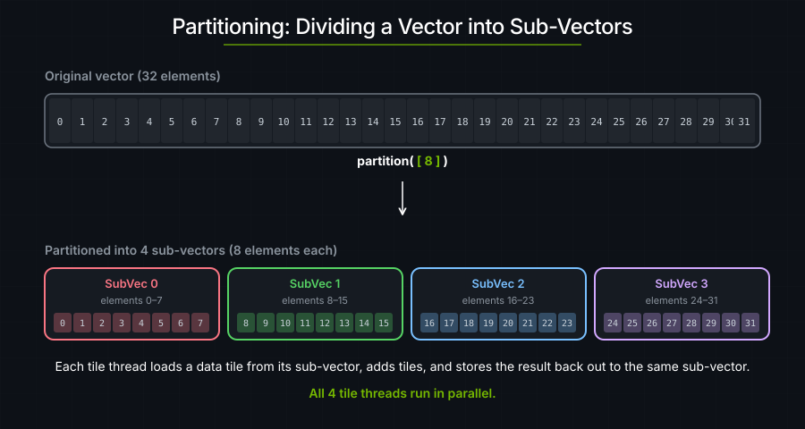
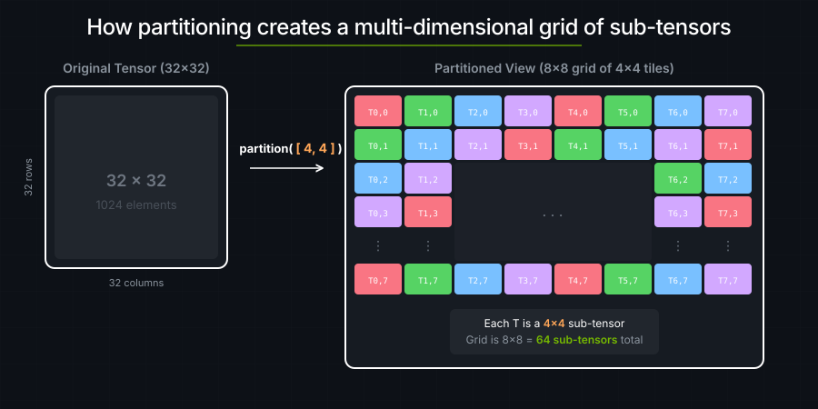
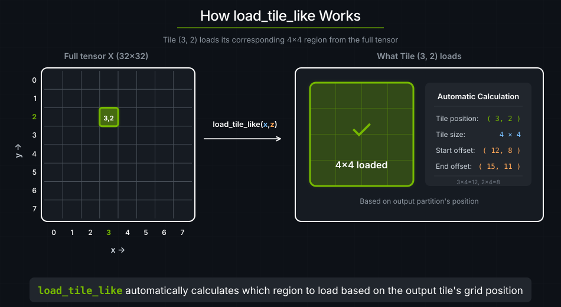

2. Vector Addition#
In cutile, tile programs run concurrently and each program knows its grid coordinates via program_id(axis). To make programs process different pieces of data, we use partitioning — dividing the output tensor into sub-tensors so that each tile program reads from and writes to a distinct region.

use cuda_async::device_operation::DeviceOp;
use cuda_core::Device;
use std::sync::Arc;
use cutile;
use cutile::api::{ones, zeros};
use cutile::error::Error;
use cutile::tensor::{IntoPartition, Tensor, ToHostVec, Unpartition};
use cutile::tile_kernel::TileKernel;
#[cutile::module]
mod my_module {
use cutile::core::*;
#[cutile::entry()]
fn add<const S: [i32; 2]>(
z: &mut Tensor<f32, S>, // Output: has static shape S (the tile shape)
x: &Tensor<f32, {[-1, -1]}>, // Input: dynamic shape (full tensor)
y: &Tensor<f32, {[-1, -1]}> // Input: dynamic shape (full tensor)
) {
let tile_x = x.load_like(z); // Load a tile from x using z's partitioning
let tile_y = y.load_like(z); // Load a tile from y using z's partitioning
z.store(tile_x + tile_y); // Add and store result
}
}
use my_module::add;
fn main() -> Result<(), Error> {
let device = Device::new(0)?;
let stream = device.new_stream()?;
// Create input tensors: 32×32 matrices filled with 1.0
let x: Arc<Tensor<f32>> = ones(&[32, 32]).sync_on(&stream)?.into();
let y: Arc<Tensor<f32>> = ones(&[32, 32]).sync_on(&stream)?.into();
// Create output tensor, PARTITIONED into 4×4 sub-tensors.
let z = zeros(&[32, 32]).sync_on(&stream)?.partition([4, 4]);
// Run the kernel — one tile thread per sub-tensor, for a total of 64 threads.
let (z, _x, _y) = add(z, x, y).sync_on(&stream)?;
// Verify results.
let z_host: Vec<f32> = z.unpartition().to_host_vec().sync_on(&stream)?;
println!("z[0] = {} (expected 2.0)", z_host[0]);
Ok(())
}
Output:
z[0] = 2 (expected 2.0)
Partitioning#
Partitioning divides a tensor into a grid of sub-regions, each processed by one tile block. In cuTile Rust, partitioning works differently for mutable outputs (&mut Tensor) and read-only inputs (&Tensor).
Host-Side Partitioning (Required for &mut Tensor)#
let z = zeros(&[32, 32]).sync_on(&stream)?.partition([4, 4]);
Creates a 32×32 output tensor initialized to zeros.
Divides it into 4×4 sub-tensors.
Creates an 8×8 grid of sub-tensors (32÷4 = 8 in each dimension).

Mutable tensors must be partitioned on the host side before kernel launch. This guarantees that each tile block writes to a disjoint sub-region — satisfying Rust's exclusive access requirement for mutable memory. The host-side Partition also determines the launch grid: cutile automatically infers that an 8×8 partition means 64 tile blocks.
On the host side, the generated launcher expects a partition for every &mut Tensor parameter — Partition<Tensor<T>> from tensor.partition(...), Partition<&mut Tensor<T>> from (&mut tensor).partition(...), or a mapped partition — so you always call .partition(...) before passing the tensor.
Device-Side Partitioning (Available for &Tensor)#
Read-only inputs are passed as &Tensor<T>, Tensor<T>, Arc<Tensor<T>>, or &TensorView<T> on the host side — no host-side partitioning required. Multiple tile blocks can safely read from the same or overlapping regions, so there is no exclusive-access constraint to enforce.
Instead, read-only tensors can be partitioned inside the kernel using .partition(shape![M, N]):
// Device-side: partition a read-only tensor inside the kernel.
let part_x = x.partition(shape![BM, BK]);
let tile = part_x.load([i, j]);
The same &Tensor can use different partition shapes within one kernel. GEMM,
for example, uses different shapes for x and y.
In this tutorial, we use x.load_like(z) instead of explicit device-side partitioning. This convenience function partitions x using the same shape and coordinates as z, which is the common case for element-wise operations. Later tutorials (starting with matrix multiplication) use explicit device-side partitioning when inputs need different access patterns.
Launch grid#
Calling add(z, x, y) launches an 8×8×1 grid from z's host-side partition.
Each of the 64 tile blocks processes a 4×4 chunk.
The Kernel#
fn add<const S: [i32; 2]>(
z: &mut Tensor<f32, S>, // Output sub-tensor (4×4)
x: &Tensor<f32, {[-1, -1]}>, // Full input tensor
y: &Tensor<f32, {[-1, -1]}> // Full input tensor
) {
let tile_x = x.load_like(z);
let tile_y = y.load_like(z);
z.store(tile_x + tile_y);
}
x.load_like(z) loads a tile from x using the same tile shape (S=4×4) and coordinates (tile thread id) as z.

Compare to CUDA C++:
Task |
CUDA C++ |
cuTile Rust |
|---|---|---|
Calculate thread index |
|
Not needed |
Calculate global offset |
Manual pointer arithmetic |
|
Bounds checking |
|
Built-in |
Coalesced memory access |
Manual, error-prone |
Automatic |
The Load/Store Pattern#
Almost every kernel follows this pattern:
fn my_kernel(...) {
// 1. LOAD: Global memory → tiles (registers).
let tile_a = load_something(...);
let tile_b = load_something_else(...);
// 2. COMPUTE: Operate on tiles in registers.
let result = tile_a + tile_b;
// 3. STORE: Tiles (registers) → global memory.
output.store(result);
}
Key Takeaways#
Concept |
What It Means |
|---|---|
Host-side partitioning |
|
Device-side partitioning |
|
Static shape |
The tile shape carried in the compiled variant |
Dynamic shape |
Dynamic tensor shape; does not create a new compiled variant when tensor shape changes |
load_like |
Convenience for element-wise ops: loads from the input using the same partitioning and mapping as the output (also available as the free function |
Load/Store pattern |
Load → Compute → Store is the GPU kernel idiom |
Exercise 1: Change Tile Shape#
Modify the partition to [8, 8]:
let z = zeros(&[32, 32]).sync_on(&stream)?.partition([8, 8]);
How many tile threads are launched?
How many elements does each tile thread process?
Answer
32÷8 = 4 tiles per dimension → 4×4 = 16 tiles total.
Each tile thread processes 8×8 = 64 elements.
Exercise 2: Three-Way Addition#
Modify the kernel to add three tensors: z = x + y + w.
Hint
Add a third input parameter and load three tiles:
let tile_w = w.load_like(z);
z.store(tile_x + tile_y + tile_w);
Exercise 3: Non-Square Partitions#
Try partition([4, 8]) — rectangular tiles. Does it still work?
See also#
Tensors and Tiles — partitioning, load/store, and tile arithmetic
Useful Mental Models — tile blocks and grid geometry
DSL API — full signatures for
load_like,store, and the arithmetic operators used here